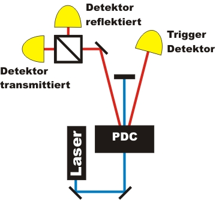
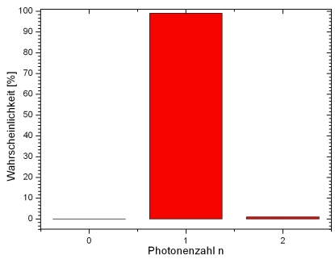
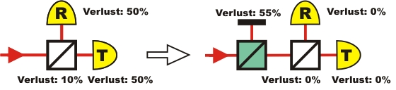
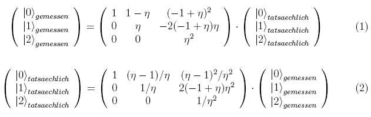
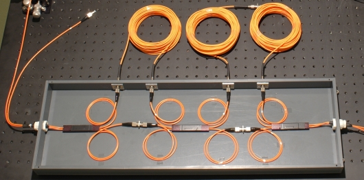

Existenz des Photons Kapitel 3:
Photonenstatistik bis n=2
Im letzten Kapitel (Kapitel_2) wurde die Existenz des Photons als unteilbares Quantenobjekt bewiesen. Ein graphischer Zugang zur Existenz des Photons ist die Photonenstatistik, die mit dem gleichen Experiment ermittelt werden kann (Abb. 1). Im Experiment wird die Photonenstatistik mit und ohne dem Triggerdetektor bei unterschiedlichen Leistungen aufgenommen. Über die Photonenstatistik sind die Unterschiede zwischen abgeschwächtem klassischem Licht (ohne Trigger) und einzelnen Photonen (mit Trigger) direkt graphisch zugänglich. Bei der Aufnahme der Photonenstatistik treten wie bei allen Experimenten Photonenverluste auf, weshalb zwischen der gemessenen verlustbehafteten und der tatsächlich von der Quelle emittierten Photonenstatistik unterschieden werden muss.
 |
 |
Abb. 1: Experiment (links) und die daraus ermittelte tatsächliche Photonenstatistik (rechts)
Experiment im kontinuierlichen Betrieb:
Im folgenden interaktiven Experiment wird die Photonenstatistik mit und ohne den Trigger Detektor aufgenommen. Die Leistung des 405nm Lasers kann mit den beiden grauen Tastern neben dem Polarisationsdreher verändert werden. Bei einer Messzeit von 1s wird gezählt, wieviele Detektionen erfolgen. Der blaue Laser gibt pro Sekunde 16 Millionen einzelne Lichtpulse ab. Für die Statistik ohne den Trigger Detektor werden alle Ereignisse am Strahlteiler gezählt. Für die Statistik mit dem Trigger Detektor werden nur die Ereignisse am Strahlteiler gezählt, bei denen gleichzeitig ein Triggerereignis vorhanden ist. Die Ermittlung der Verluste im Experiment und die Umrechnung in die tatsächliche Photonenstatistik erfolgt automatisch und wird im nächsten Absatz erläutert. Im interaktiven Experiment kann für beide Statistiken die gemessene und die tatsächliche Photonenstatistik angezeigt werden. Ab welcher Laserleistung würden Sie die Quelle als Einzelphotonenquelle z. B. für die Quantenkryptographie verwenden? Welche Vor- und Nachteile ergeben sich, wenn die Laserleistung reduziert wird? Woran kann der Unterschied zwischen klassischem abgeschwächtem Licht und nichtklassischem Licht erkannt werden?
Beobachtung und Erklärung:
Die Photonenpaarquelle sendet bei einer mittleren Laserleistung von 500µW mit einer Wahrscheinlichkeit von 99,0% nur einzelne Photonen aus (n=1). Die restlichen 1% sind Zweiphotonenanteile (n=2). Die Quelle sendet bei dieser Laserleistung ca. 38.000 einzelne Photonen pro Sekunde aus.
Wird die Laserleistung reduziert, so sendet die Quelle bei einer mittleren Leistung von 50µW mit einer Wahrscheinlichkeit von 99,9% nur einzelne Photonen aus. Bei dieser geringen blauen Laserleistung sinkt die Ausbeute der Quelle auf nur 3.500 einzelne Photonen pro Sekunde. Für eine absolut sichere Verbindung bei der Quantenkryptographie sollte der Anteil an einzelnen Photonen bei 100% liegen. Gleichzeitig sollten bei der Quantenkryptographie auch eine möglichst große Rate pro Sekunde übertragen werden. Bei der Quantenkryptographie mit einer angekündigten Einzelphotonenquelle würde ein Kompromiss aus z. B. 99,5% Einzelphotonenanteil und einer Datenrate von einigen kHz gewählt werden.
Bei der tatsächlichen Photonenstatistik mit dem Trigger Detektor sind fast nur Ereignisse mit n=1 vorhanden. Dieser photonische Zustand kann mit eine elektromagnetischen Welle (klassisches Licht) nicht erreicht werden. Die Photonenstatistik ohne den Trigger Detektor zeigt eine Poissonverteilung mit der mittleren Photonenzahl von z. B. <n>=0,1. Diese Verteilung ist über eine klassische elektromagnetische Welle erklärbar. Die gemessene Poissonverteilung ist die gleiche wie bei abgeschwächtem Laserlicht, weshalb abgeschwächtes Laserlicht als klassisches Licht bezeichnet wird.
Im Labor wird bei jedem Experiment ein automatisches Messprotokoll mit allen Daten generiert, das für die Leistung 500µW heruntergeladen werden kann [Messprotokoll]
Gemessene und tatsächliche Photonenstatistik:
Die verlustbehaftete gemessene Photonenstatistik enstpricht im Experiment nicht der tatsächlich von der Quelle emittierten Photenstatistik. Die größten Verluste treten bei den Detektoren auf, da diese nur ca. 50% aller eintreffenden Photonen registrieren. Weitere Verluste kommen durch die Reflexion am Strahlteiler, durch die Einkopplung in die Glasfaserkabel zum Detektor, durch die Filtertransmission von nur 60% und durch die Streuung in der Luft zustande. Alle Verluste im Experiment können durch das Modell eines virtuellen Strahlteilers zusammengefasst werden (Abb. 2). In diesem mathematischen Verlustmodell transmittiert der virtuelle Strahlteiler z. B. η=45% aller Photonen, die zu 100% nachgewiesen werden. Die restlichen 55% der Photonen werden im virtuellen Strahlteilermodell reflektiert, und zu 0 % nachgewiesen.

Abb. 2: links: Verluste von einzelnen Photonen bei jeder Komponente im realen Experiment
rechts: mathematisches Modell virtueller Strahlteiler: keine Verluste im restlichen Experiment
Die Effizienz η im realen Experiment entspricht der Transmission am virtuellen Strahlteiler. Diese Effizienz kann direkt aus der gemessenen Photonenstatistik mit dem Trigger abgelesen werden (Abb. 3 links). Bei 80% aller Photonen war ein Triggerereignis vorhanden, aber am Strahlteiler kein Photon. der Verlust beträgt somit 80%. Die Effizienz η des Experimentes ist das Verhältnis von gemessenen Koinzidenzen (n=1) zu den erwarteten Koinzidenzen (n=0) und beträgt η=0,25%. Die Effizienz η kann nur mit der getriggerten und gemessenen Photonenstatistik ermittelt werden. Die hierbei ermittelte Effizienz stimmt auch mit der Effizienz der nicht getriggerten Photonenstatistik überein.
Abb. 3: Photonenstatikstik mit Trigger-Detektor
links: gemessen, rechts tatsächlich
Der virtuelle Strahlteiler ist mathematisch ein Bernoulli-Experiment mit zwei möglichen Ereignissen. Der Ausgang eines Bernoulli-Experiments lässt sich für das Experiment mit einer Verlustmatrix beschreiben (Formel 1). Hierbei wird von der tatsächlichen Photonenstatistik ausgegangen, die mit der Verlustmatrix multipliziert wird. Das Ergebnis der Multiplikation ist die gemessene Photonenstatistik. In unserem Experiment ist die gemessene Photonenstatistik bekannt und die tatsächliche Photonenstatistik muss ermittelt werden. Dazu wird die Formel 1 zur Formel 2 invertiert. In Formel 2 werden die Ereignisse aus der gemessenen Statistik eingesetzt und mit der invertierten Matrix multipliziert. Das Ergebnis ist die tatsächliche Photonenstatistik (Abb. 3 rechts).

Wenn zwei einzelne Photonen auf einen symmetrischen Strahlteiler treffen so ergeben sich vier Möglichkeiten auf welche Weise die Photonen den Strahlteiler verlassen können. Von diesen vier Möglichkeiten werden nur zwei Möglichkeiten durch die Detektoren nachgewiesen. Die Ereignissen mit n=2 müssen bei der gemessenen Statistik somit korrigiert werden.
Die Ermittlung der Photonenstatistik mit einem einzelnen Strahlteiler ist nur für Lichtpulse mit n<3 gültig, da Photonenzahlen mit n>2 nicht mehr aufgelößt werden. Im Kapitel Photonenstatistik wird ein Experiment (Abb. 4) vorgestellt, bei dem theoretisch die Photonenzahl n=8 über eine geschickte Kombination von Strahlteilern und Verzögerungsstrecken aufgelößt werden kann.

Abb. 4: Experiment zum Auflösen der Photonenstatistik bis n=8
Originaldaten aus dem Experiment: Messprotokoll bei 500µW, Statistikdaten für alle Leistungen
Zurück zur Übersicht [klick]
Autor: P. Bronner, Oktober 2008